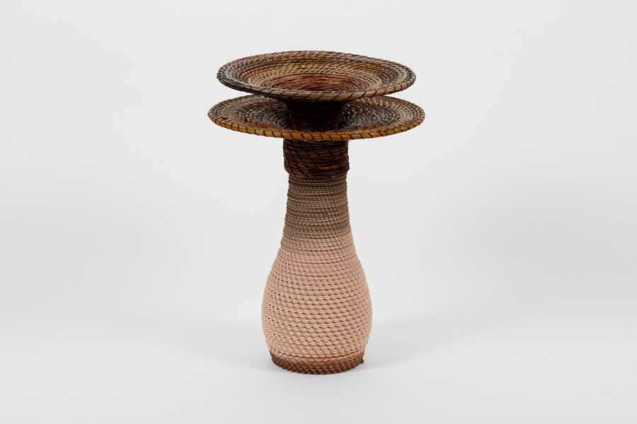

The Heresy of Legacy
The Heresy of Legacy, the first exhibition at Volume Gallery’s new, expanded, space, explores the cyclical nature of movements and currents in art, architecture, and design—how innovation emerges in friction with established legacies, and how heresy becomes the foundation for new canons. This group exhibition considers what happens when today’s artists engage the paradox of history: honoring the influence of the past while consciously dismantling it. Rooted in the history of the avant-garde, the exhibition acknowledges how reactionary moves have continually propelled art, architecture, and design forward.
Stanley Tigerman once encouraged a protégé to “take the baton—run with it, stab him with it, stab someone else with it, pass it forward and be stabbed by it—just don’t decline it.” This call to action embodies the spirit of the exhibition: a recognition that creative inheritance is both a gift and a weapon—a cycle of making, unmaking, and remaking. The exhibition will feature carefully curated historical and contemporary practices that operate within this matrix: giving equal weight to legacy and heresy, embracing complexity rather than purity, and acknowledging that rebellion itself eventually ossifies into tradition.
Through this lens, The Heresy of Legacy will trace the continual renegotiation between reverence and rupture—how artists and designers today contend with inherited ideals, materials, and forms, and how they point toward future iconoclasms.
Featuring:
Selva Aparicio
Richard Artschwager
Garry Knox Bennett
Lia Cook